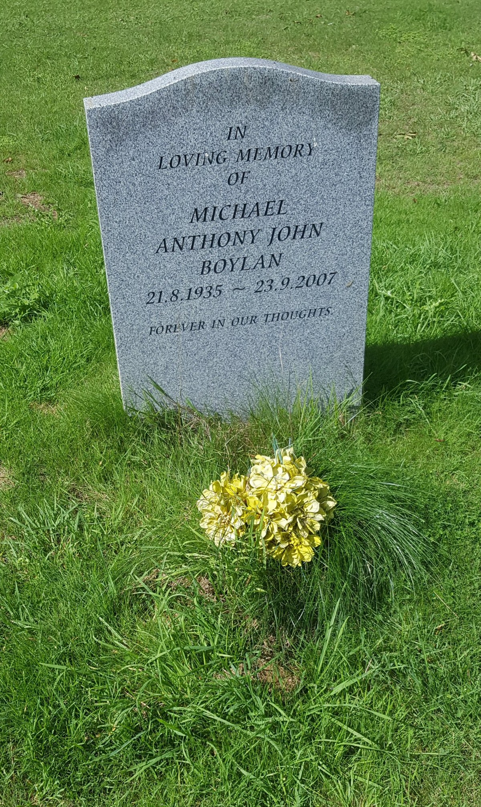
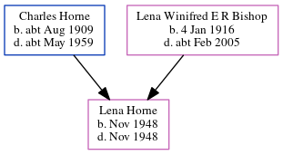

Michael Anthony John Boylan 1935 - 2007
[ Home ] | [ Calendar ] | [ Surnames Index ] | [ Errors ] | [ Family History ]Michael Boylan, the husband of Patricia B Horne (the second cousin on the father's side of Nigel Horne), was born in Kingsclere, Hampshire, England on 21 Aug 19351,2 and. He married Patricia (with whom he had 1 surviving child, ) in Ashford, Kent, England around May 19624. On 29 Sept 1939, he was living in Westwell, Kent, England1.
He died on 23 Sept 20073 and was buried in Westwell after 23 Sept 2007.
Citations
- 1939 Register - Findmypast (was the son of the head of the household)
- England & Wales births 1837-2006 - Findmypast
- England & Wales Government Probate Death Index 1858-2019 - Findmypast
- England & Wales marriages 1837-2008 - Findmypast
Media
Michael Boylan - gravestone

England & Wales marriages 1837-2008 - BMD/M/1962/2/AZ/000103/095
1939 Register Transcription - TNA-R39-1863-1863F-006-29
England & Wales Births 1837-2006 - BMD-B-1935-4-AZ-000107-017
England & Wales Government Probate Death Index 1858-2019 - GBOR/GOVPROBATE/B/2007-2008/00013574
Family Tree
Map
Generated by ged2site. Last updated on Jul 3, 2024
Known Issues
Burial place (Westwell, Kent, England) has no citations
Adding date of burial as 'aft 23 Sep 2007'
Date of death is known, but not place